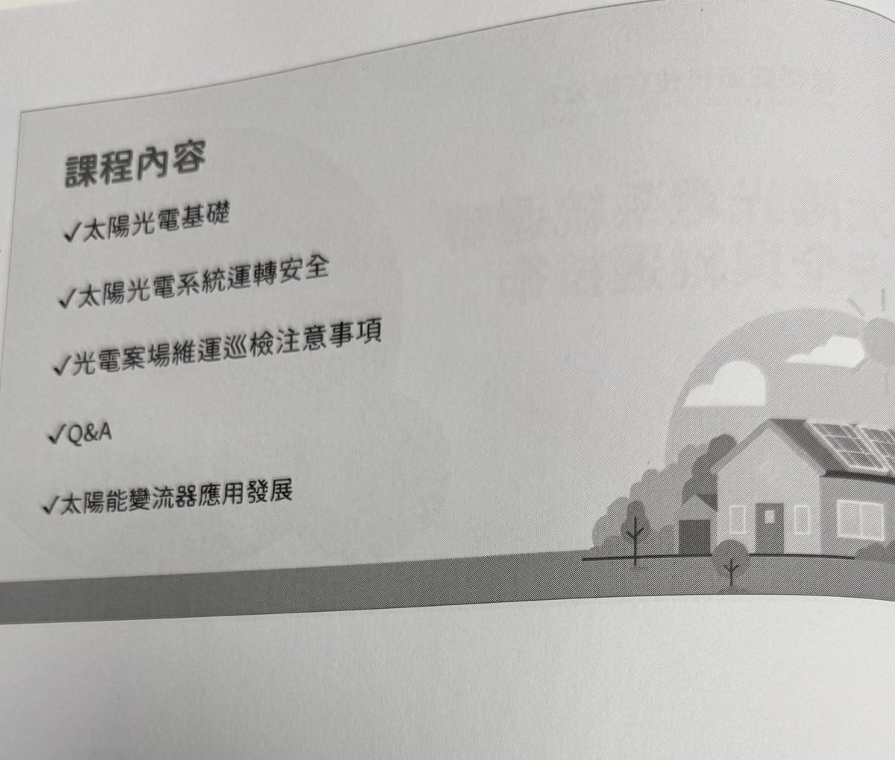
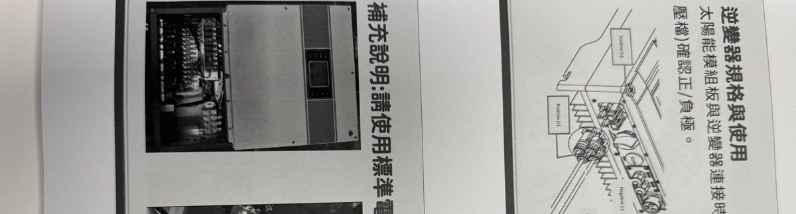
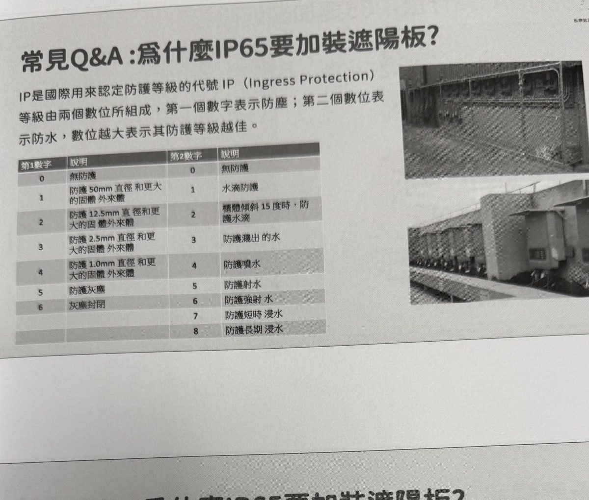

已上線 (Ready)
核心課 #01
太陽光電設置乙級技術士回訓課程——光電維運技能與基本光電知識
解耦光熱與光電轉換機制、全片到半切封裝突破、日照定電流與溫度定電壓模型；深入 1A 備品匹配、30% 照度鉗表清洗門檻、變流器 1.5 倍超配衰退代價、台電函稿調 TAP 與負極 -199V 防觸電 SOP。
打破「光電維運只是擦板打掃」的傳統誤解。本平台依據 20261027 太陽光電設置乙級技術士實體回訓教材、台電最新併聯規範與現場 150 分鐘深度演講重塑，以金字塔原理行動結論、三段式講稿與高清圖冊，建立專業維運工程師的資產防禦體系。
20261027 太陽光電設置乙級技術士專業回訓課程・60 頁麥肯錫風格 16:9 互動簡報



支援多維度領域標籤分類，預留模組化擴充架構，逐步構築進金生能源光電運維工程知識庫
本專案採用數據驅動 (Data-Driven) 的靜態生成架構，各課程維持獨立 HTML 簡報，主頁與全域搜尋引擎自動連動，內部工程師新增課程只需三步驟：
courses/ 目錄建立新課程 HTML 簡報，遵循金字塔原理（問題、3大亮點、總結）與 16:9 版型。
data/courses.json 登記新課程 ID、標題、主講人、核心論點與五大模組摘要，首頁知識地圖將自動更新狀態。
data/search-index.json 增補投影片標題、標籤與文字摘要，全域即時檢索框將立即可搜尋新課程內容！